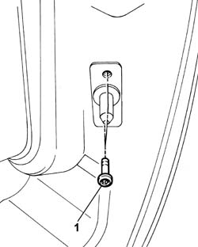
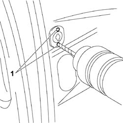
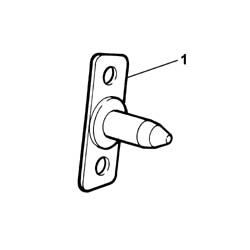
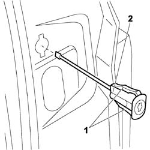

7020D40 LOWER CENTERING PIN FOR ONE SLIDING SIDE DOOR - R.R.
- Path
- Procedures > 70 FITTINGS > 7020 LOAD COMPARTMENT DOORS > 7020D SLIDING SIDE DOOR CLOSURE DEVICES > 7020D40 LOWER CENTERING PIN FOR ONE SLIDING SIDE DOOR - R.R.
- Kind
- repair procedure (removal / refitting; the operation number is the code)
- Applies to
- all engines; all production periods
- Interactive page
- https://sloeber94.github.io/elrnDB-fUlss/en/#/179007730
Applies to: all engines; all production periods
 Removing
Removing
 Refitting
Refitting
Applies to: all engines; all production periods
Removing
Refitting- Open the sliding side door to the end of its travel.
1. Use a drill to drill out the notches on the child safety device.

Applies to: all engines; all production periods

Applies to: all engines; all production periods
1. Use a screwdriver to release the retaining tabs.
2. Withdraw the child safety device and remove.

Applies to: all engines; all production periods
Refitting
Removing- Position a new safety device in its seat and push home until it clicks into place.
- Check the operation of sliding side door opening/closure.